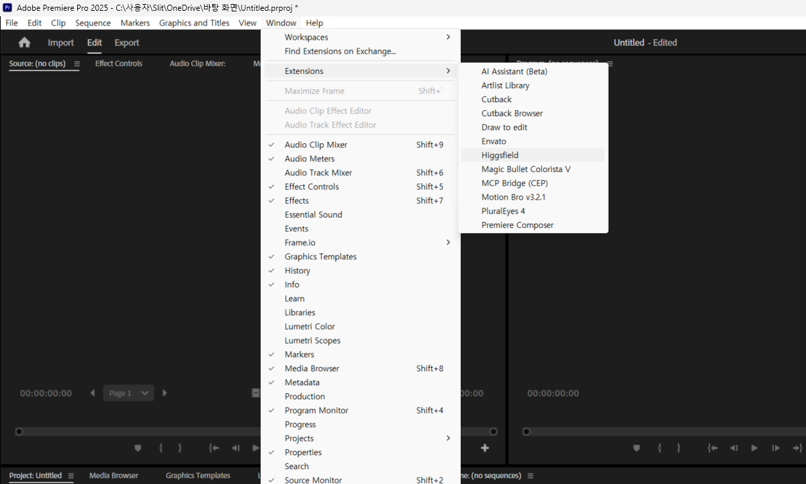
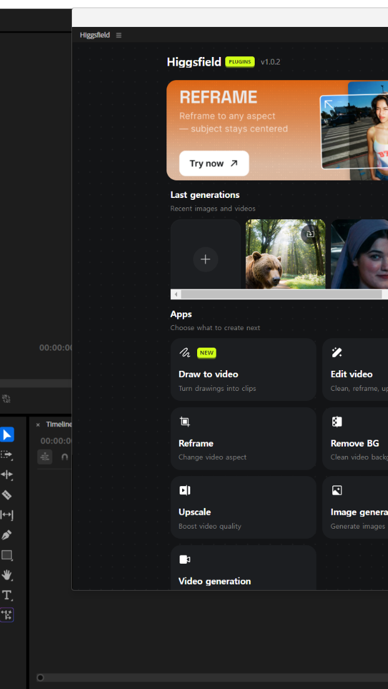

AInspire 4기 · 미디어 도구 강의
영상 한 편을
AI로 만드는 법
AI로 활용할 수 있는 미디어 도구 모음
yt-dlp
FFmpeg
Whisper
Remotion
Higgsfield MCP
Premiere MCP
영상 한 편
화살표 키로 넘기세요
파이프라인이란?
단계가 이어지면 영상이 됩니다
AI는 각 단계마다 다른 도구를 호출합니다.
명령어 하나하나를 외울 필요는 없습니다. 어떤 단계에서 어떤 도구가 왜 쓰이는지를 이해하는 것이 핵심입니다.
Step 1 / yt-dlp
yt-dlp — 소스 구하기
Step 2 / FFmpeg
FFmpeg — 자르고 다듬기
Step 3 / Whisper
Whisper — 자동 자막 생성
Step 4 / FFmpeg
FFmpeg — 조립·마무리
전체 흐름 다시보기
한눈에 보는 영상 제작 파이프라인 (쇼츠 예시)
| Step 1 |
-> |
yt-dlp |
-> |
YouTube 등에서 영상·오디오 파일을 내려받습니다. |
| Step 2 |
-> |
FFmpeg |
-> |
구간 자르기, 포맷 변환, 9:16 세로 크롭을 수행합니다. |
| Step 3 |
-> |
Whisper |
-> |
음성을 텍스트로 변환해 타임스탬프가 담긴 .srt 파일을 만듭니다. |
| Step 4 |
-> |
FFmpeg |
-> |
자막 굽기·BGM 믹스 후 최종 mp4로 인코딩합니다. |
각 단계는 독립적으로 실행되며, AI는 상황에 따라 필요한 단계만 선택적으로 호출할 수 있습니다.
부록 — 용어 정리
알아두면 좋은 핵심 용어
코덱 vs 컨테이너
컨테이너(.mp4, .mov)는 파일 포장 박스이고, 코덱(H.264, AAC)은 그 안에 담긴 압축 방식입니다. 같은 .mp4라도 코덱이 다를 수 있습니다.
비트레이트
1초에 처리하는 데이터 양(kbps/Mbps)입니다. 높을수록 화질이 좋고 파일 크기도 커집니다. 플랫폼마다 권장 비트레이트가 있습니다.
fps (프레임 레이트)
1초에 보여주는 정지 화면 수입니다. 24fps는 영화 감성, 30fps는 일반 영상, 60fps는 부드러운 동작에 씁니다. 쇼츠는 대체로 30fps가 기본입니다.
해상도 / 종횡비
해상도는 픽셀 수(예: 1920x1080)이고, 종횡비는 가로:세로 비율입니다. 16:9는 가로 영상(유튜브), 9:16은 세로 영상(쇼츠·릴스)입니다.
STT
Speech-To-Text의 약자입니다. 음성을 텍스트로 변환하는 기술이며, Whisper가 이 역할을 담당합니다. 반대 방향은 TTS(Text-To-Speech)입니다.
렌더링
코드·설정·레이어를 계산해 실제 픽셀로 된 영상 파일을 만들어내는 과정입니다. 계산량이 많아 시간이 걸리며, Remotion의 CLI 명령이 이 역할을 합니다.
보너스 / Remotion
Remotion — 코드로 영상 만들기
MCP / Higgsfield
Higgsfield MCP — AI가 이미지·영상을 직접 생성
MCP / Premiere Pro
Premiere Pro MCP — AI가 편집 타임라인을 조립
패널이란?
Higgsfield 패널이 뭔가요?
Premiere Pro / After Effects 안에 Higgsfield 영상 생성 UI를 패널로 띄우는 공식 확장
1
편집 작업 중 앱을 빠져나가지 않고 Higgsfield 영상 생성 — 브라우저 왔다 갔다 할 필요 없음
2
현재 선택한 클립 정보(Live Link)를 패널이 자동으로 받아옴 — 그 클립을 ref로 쓰는 흐름이 자연스러움
3
생성된 영상은 프로젝트 패널에 자동 임포트 — 사용자가 직접 타임라인으로 드래그
4
설치 파일은 .zxp 형식 — Adobe 표준 확장 패키지. Windows·Mac 공통
Step 1 · Download
먼저 .zxp 파일을 받습니다
1
higgsfield.ai 접속 → 계정 로그인 (이미 MCP 쓰고 있다면 같은 계정)
2
상단/사이드 메뉴에서 Adobe / Extension 항목 찾기
3
ai.higgsfield.cep.zxp 다운로드 → 원하는 폴더에 저장
사전 조건Premiere Pro CC 2019 이상 또는 After Effects CC 2019 이상 (CEP 9.0+)
대상 앱Premiere Pro (PPRO) / After Effects (AEFT) — Photoshop·Illustrator는 미지원
OSWindows / Mac 공통
Step 2 · Install (Windows)
Windows 설치 — zip으로 풀어서 폴더 복사
.zxp는 사실 .zip — 별도 도구 없이 직접 설치 가능
1
다운받은 ai.higgsfield.cep.zxp의 확장자를 .zip으로 변경 후 압축 풀기
2
풀린 폴더(안에 CSXS, main 등이 있어야 함)를 통째로
%APPDATA%\Adobe\CEP\extensions\ai.higgsfield.cep\ 안에 복사
3
PlayerDebugMode 켜기 — 아래 PowerShell 한 줄 실행
(zip으로 풀면 서명이 끊겨서 Adobe가 거부 → 디버그 모드 필수)
4
실행 중인 Premiere Pro 완전 종료 후 재실행
PowerShell (관리자 불필요)
foreach ($v in 11,12) { New-ItemProperty -Path "HKCU:\Software\Adobe\CSXS.$v" -Name "PlayerDebugMode" -Value "1" -PropertyType String -Force }
CSXS.11 = Premiere 2021~2023 / CSXS.12 = Premiere 2024~ · 둘 다 켜두면 버전 상관없이 안전
Step 3 · First Launch
패널 열기 — 창 → 확장

여기에 Premiere 메뉴 캡쳐 들어갈 자리
창(Window) → 확장(Extensions) 메뉴 펼친 상태
"Higgsfield"와 "Draw to edit" 두 항목이 보여야 함
img/cap_premiere_menu.png
1
창 → 확장 → Higgsfield — 메인 영상 생성 패널
2
창 → 확장 → Draw to edit — 그림 기반 편집 패널 (보조)
3
메뉴에 항목이 안 보임 → 설치 위치 확인 + Premiere 완전 재시작
4
패널이 열려도 흰 화면 → 인터넷 연결 / 로그인 / 디버그 모드 확인
Step 4 · Panel UI
Higgsfield 패널 둘러보기

여기에 Higgsfield 패널 캡쳐 들어갈 자리
패널이 열린 상태 — 로그인 완료 후 메인 화면
모델 선택 / 프롬프트 / 생성 버튼이 보이게
img/cap_panel.png
①
모델 선택 — Seedance 2.0, Veo3, Kling 등 영상 모델 / 이미지 모델 선택
③
레퍼런스 — 현재 선택 클립이 자동으로 ref 후보로 들어옴 (Live Link)
④
Generate — 클릭 시 Higgsfield 서버로 작업 전송 → 진행 상황 표시
Capabilities
패널이 할 수 있는 것 / 없는 것
미리 알고 쓰면 헤매지 않습니다 — 코드 분석으로 확인한 사실
Premiere에서 현재 선택한 클립 정보 읽기 (Live Link)
Higgsfield 서버로 영상·이미지 생성 요청
생성 진행 상황 표시 / 결과 미리보기
완성된 영상을 프로젝트 패널에 자동 임포트
Draw to edit — 그림 기반 편집 지시
타임라인 위 클립을 자동 교체 — 임포트만 됨, 드래그는 직접
시퀀스에 자동 삽입 / overwrite
렌더링·익스포트 자동 실행
마커·인아웃 자동 설정
💡 요약: 패널은 "생성 → 프로젝트 패널 임포트"까지. 타임라인에 어떻게 넣을지는 사용자가 결정.
이 분리가 일부러 의도된 디자인입니다 — 영상 자동 교체는 위험할 수 있으니 사람이 판단.
AI는 도구,
당신은 감독입니다
AI는 다양한 도구들을 사용합니다.
당연히 어떤 도구를 쓸 수 있는지 아는 사람이
AI를 잘 활용할 수밖에 없습니다.
yt-dlp
+
FFmpeg
+
Whisper
=
영상 한 편
MCP로 한 단계 더 —
Remotion
Higgsfield MCP
Premiere MCP